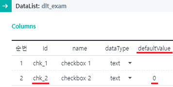
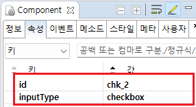

GridView의 바디 컬럼의 'inputType'이 'checkbox'로 설정되었을 때, 컬럼의 기본값을 설정한 예제입니다. 이 기능은 GridView와 연결된 DataList의 컬럼 'defaultValue' 속성을을 설정하여 구현합니다.
'defaultValue' 속성은 컬럼의 데이터가 없는 경우 기본값을 할당하기 위해 사용합니다. (서버에서 데이터가 해당 컬럼이 없이 내려오거나 컬럼의 값이 빈 문자로 할당 된 경우) 'defaultValue'를 설정하지 않는 경우 컬럼의 기본값은 빈 문자입니다.
Checkbox의 defaultValue 설정 비교하기
예제 영역 'checkbox의 'defaultValue' 설정 비교하기'에 구성된 GridView에서 테스트합니다.GridView와 연결된 DataList에 할당한 JSON에는 'checkbox'와 연결된 컬럼이 정의되지 않았습니다. 'defaultValue'를 설정한 컬럼과 설정하지 않은 컬럼의 데이터를 비교합니다.
1
STEP 1: 버튼 'Data 출력하기'를 클릭합니다.
2
STEP 2: 예제 영역 '로그 확인'의 textarea 또는 브라우저 개발자 도구의 콘솔에 출력된 JSON를 확인합니다.
'checkbox'와 연결된 'chk_1'과 'chk_2'의 값이 아래와 같이 할당됩니다. - chk_1: "" //deafultValue 미설정 - chk_2: "0" //deafultValue 설정 - 설정 값:0
Example 1.Log
//chk_1 : deafultValue 미설정 //chk_2 : deafultValue 설정 [ { "chk_1": "", "chk_2": "0", "rowStatus": "R" }, { "chk_1": "", "chk_2": "0", "rowStatus": "R" }, { "chk_1": "", "chk_2": "0", "rowStatus": "R" } ]
GridView와 연결될 DataList의 컬럼 속성 'defaultValue'에 값을 설정하고 GridView의 컬럼의 inputType을 'checkbox'로 설정합니다.
GridView와 연결된 DataList 생성 및 연결 방법은 생략되었습니다.
1
STEP 1: DataList 컬럼의 'defaultValue' 속성 설정하기
스튜디오의 DataCollection 탭에서 GridView와 연결할 DataList를 선택합니다.
기본값을 설정할 컬럼을 선택하고 속성을 설정합니다.
[필수] defaultValue="설정 값"
할당된 값이 없는 경우 설정할 기본 값
예시) defaultValue="0"
[필수] id="컬럼 ID"
예시) id="chk_2"
Image 1.웹스퀘어 스튜디오의 데이터컬렉션 탭 예시 - DataList의 컬럼 속성 정의

Example 2.Source
<!-- DataList 본문 예시 --> <w2:dataList id="dlt_exam" baseNode="list" repeatNode="map"> <w2:columnInfo> <!-- 중략 --> <w2:column id="chk_2" defaultValue="0" name="checkbox 2" dataType="text"></w2:column> </w2:columnInfo> </w2:dataList>
2
STEP 2: GridView의 바디 컬럼의 속성을 정의합니다.
[필수] inputType="checkbox"
컬럼의 유형 - checkbox
[필수] id="chk_2"
DataList의 컬럼 ID - defaultValue가 설정된 컬럼
Image 2.웹스퀘어 스튜디오의 Component View - 속성 설정 예시

Example 3.Source
<!-- gridView 의 소스 본문 예시 --> <w2:gridView dataList="data:dlt_exam"> <!-- 중략 --> <w2:gBody id="gBody1"> <w2:row id="row2"> <!-- 중략 --> <w2:column id="chk_2" inputType="checkbox"></w2:column> <!-- 중략 --> </w2:row> </w2:gBody> </w2:gridView>
[DataList] [column] defaultValue
[GridView] [body column] inputType
[GridView] [body column] valueType